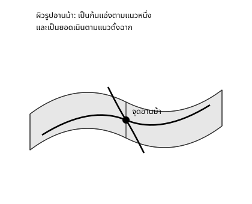

Maths Fundamentals for DS & CS — สัปดาห์ 05
จะเรียน:
$$ \nabla f(a,b)=\begin{bmatrix}f_x\\f_y\end{bmatrix}=\begin{bmatrix}0\\0\end{bmatrix} \quad\Longrightarrow\quad \begin{cases}\alpha_1x+\beta_1y=\gamma_1\\ \alpha_2x+\beta_2y=\gamma_2\end{cases} $$
ระบบเชิงเส้น $2\times2$ — สิ่งเดียวกับสัปดาห์ 2 ไม่มีอะไรเปลี่ยนแม้แต่นิดเดียว
สามกรณีของสัปดาห์ 2 แปลตรง: คำตอบเดียว / ไม่มีคำตอบ / มีมากมาย → จุดวิกฤตจุดเดียว / ไม่มีจุดวิกฤตเลย / จุดวิกฤตเป็นเส้นทั้งเส้น
$$ D = f_{xx}f_{yy}-(f_{xy})^2 $$
| กรณี | ข้อสรุป |
|---|---|
| $D>0$, $f_{xx}>0$ | ค่าต่ำสุดสัมพัทธ์ |
| $D>0$, $f_{xx}<0$ | ค่าสูงสุดสัมพัทธ์ |
| $D<0$ | จุดอานม้า |
| $D=0$ | ทดสอบไม่ได้ |
จำ: $D>0 \Rightarrow f_{xx},f_{yy}$ เครื่องหมายเดียวกันเสมอ — ดูตัวไหนก็ได้คำตอบเดียวกัน
โจทย์: $f(x,y)=x^2+y^2-4x+6y+10$
$$ f_x=2x-4=0\Rightarrow x=2 \qquad f_y=2y+6=0\Rightarrow y=-3 $$
$$ f_{xx}=2,\;f_{yy}=2,\;f_{xy}=0 \;\Rightarrow\; D=4>0,\;f_{xx}>0 \;\Rightarrow\; \textbf{ต่ำสุด} $$
ตรวจคำตอบ (กำลังสองสมบูรณ์): $f=(x-2)^2+(y+3)^2-3 \ge -3$ ✓ ต่ำสุดสัมบูรณ์จริงที่ $f=-3$
โจทย์: $f(x,y)=x^2+4xy+y^2-6x$
$$ f_x=2x+4y-6=0 \;\Longleftrightarrow\; x+2y=3 \qquad f_y=4x+2y=0 \;\Longleftrightarrow\; 2x+y=0 $$
แก้ระบบ: $y=-2x$ แทนใน (1): $x-4x=3 \Rightarrow x=-1,\,y=2$
$$ f_{xx}=2,\,f_{yy}=2,\,f_{xy}=4 \;\Rightarrow\; D=4-16=-12<0 \;\Rightarrow\; \textbf{จุดอานม้า} $$
ตรวจด้วยการเดินสองทิศ: ทิศ $x$ (ตรึง $y=2$): $(x+1)^2+3\ge3$ (ก้นแอ่ง) · ทิศเฉียง: $3-2t^2\le3$ (ยอดเนิน) — จุดเดียวกันเป็นทั้งคู่ ✓

โจทย์: $f(x,y)=x^2+2xy+y^2$ · $f_x=f_y=2x+2y$ (สมการเดียวกัน!)
$$ x+y=0 \;\Rightarrow\; (x,y)=(t,-t),\;t\in\mathbb R \qquad D=(2)(2)-2^2=0 \;\textbf{ทดสอบไม่ได้} $$
พีชคณิตตอบแทน: $f=(x+y)^2\ge0$ ทุกจุด และ $=0$ บนเส้น $x+y=0$ พอดี → ทุกจุดบนเส้นนั้นเป็นค่าต่ำสุดสัมบูรณ์ เพียงแต่ไม่ยูนีก
| ที่พลาด | วิธีกัน |
|---|---|
| แก้ $f_x=0$ และ $f_y=0$ แยกกันทั้งที่มีพจน์ไขว้ | ถ้ามี $xy$ ต้องแก้เป็นระบบ ด้วยวิธีสัปดาห์ 2 |
| ลืมยกกำลังสอง $f_{xy}$ ในสูตร $D$ | อ่านออกเสียง "ลบกำลังสองของ $f_{xy}$" |
| $D=0$ แล้วตอบว่า "จุดอานม้า" | $D=0$ คือทดสอบไม่ได้ ต้องจัดรูปพีชคณิตแทน |
| ระบบขัดแย้งกันแล้วคิดว่าคำนวณผิด | "ไม่มีจุดวิกฤตเลย" เป็นคำตอบที่ถูกต้องได้ |
ยิ่งมีทิศให้เดินมาก โอกาสที่ทุกทิศจะโค้งขึ้นพร้อมกันก็ยิ่งน้อย — อัลกอริทึมที่หยุดเมื่อ "เกรเดียนต์เป็นศูนย์" อาจหยุดที่จุดอานม้าซึ่งไม่ใช่คำตอบที่ดีเลย
กรณี $D=0$ ก็มีคู่แฝดตรงตัว — เรียกว่า "ตัวแปรซ้ำซ้อน" เช่นใส่ฟีเจอร์สำเนากันเข้าไป ผลคือสัมประสิทธิ์สองตัวสลับกันได้อย่างอิสระโดยความคลาดเคลื่อนไม่เปลี่ยน — ตีความไม่ได้
โมเดล $\hat y=wx+b$ มีสองพารามิเตอร์คือความชันกับจุดตัดแกน — ฟังก์ชันความคลาดเคลื่อนของมันจึงเป็น $f$ ของสองตัวแปรพอดี และเราจะทำมันด้วยมือในช่วงถัดไป
ตรรกะไม่เปลี่ยนแม้พารามิเตอร์จะมีล้านตัว: หาเกรเดียนต์ → ให้เท่ากับศูนย์ → แก้ระบบ
โจทย์: $h(x,y)=-x^2-y^2+2x+4y-1$
$$ h_x=-2x+2=0\Rightarrow x=1 \qquad h_y=-2y+4=0\Rightarrow y=2 $$
$$ D=(-2)(-2)-0^2=4>0,\quad h_{xx}=-2<0 \;\Rightarrow\; \textbf{ค่าสูงสุดสัมพัทธ์} $$
$$ h(1,2)=-1-4+2+8-1=4 $$
| ระบบ $2\times2$ | จุดวิกฤต |
|---|---|
| ผลเฉลยเดียว | จุดวิกฤตจุดเดียว → ทดสอบด้วย $D$ |
| ไม่มีผลเฉลย | ไม่มีจุดวิกฤตเลย |
| ผลเฉลยมากมาย | จุดวิกฤตเป็นเส้นทั้งเส้น → $D=0$ เสมอ ต้องใช้พีชคณิต |
ถ้า $f$ ไม่ใช่กำลังสอง $\nabla f=0$ จะไม่เชิงเส้นและแก้ด้วยมือไม่ได้ทั่วไป — นี่คือเหตุผลที่ Capstone เลือกใช้ SSE ซึ่งเป็นฟังก์ชันกำลังสองในพารามิเตอร์พอดี
จบช่วงนี้ควรทำได้:
ตั้งค้างไว้: พร้อมแล้วสำหรับ Capstone — สร้างสูตร linear regression ด้วยมือ
การบ้าน: exercises/ex_05.md ข้อ 9–16